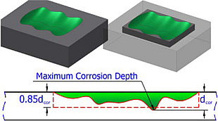
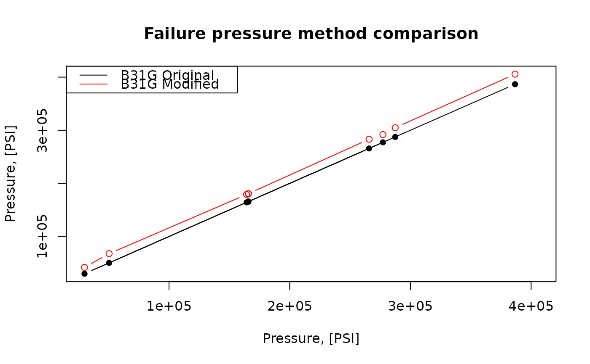

Calculate failure pressure of the corroded pipe according to Modified B31G, Level-1 algorithm listed in ASME B31G-2012.
The next assumption of the corrosion shape is adopted by Modified B31G:

There dcor represents argument depth.
b31gmodpf(d, wth, smys, depth, l)
| d | nominal outside diameter of the pipe, [inch]. Type: |
|---|---|
| wth | nominal wall thickness of the pipe, [inch]. Type: |
| smys | specified minimum yield of stress (SMYS) as a
characteristics of steel strength, [PSI]. Type: |
| depth | measured maximum depth of the corroded area, [inch]. Type: |
| l | measured maximum longitudinal length of corroded area, [inch]. Type: |
Estimated failure pressure of the corroded pipe, [PSI]. Type: assert_double.
Since the definition of flow stress, Sflow, in ASME B31G-2012 is recommended with Level 1 as follows:
$$Sflow = 1.1SMYS$$
no other possibilities of its evaluation are incorporated.
For this code we avoid possible semantic optimization to preserve readability and correlation with original text description in ASME B31G-2012. At the same time source code for estimated failure pressure preserves maximum affinity with its semantic description in ASME B31G-2012.
Numeric NAs may appear in case prescribed conditions of
use are offended.
ASME B31G-2012. Manual for determining the remaining strength of corroded pipelines: supplement to B31 Code for pressure piping.
S. Timashev and A. Bushinskaya, Diagnostics and Reliability of Pipeline Systems, Topics in Safety, Risk, Reliability and Quality 30, DOI 10.1007/978-3-319-25307-7
Other fail pressure functions: b31gpf, dnvpf,
shell92pf, pcorrcpf
Other ASME B31G functions:
b31crvl(),
b31gacd(),
b31gacl(),
b31gafr(),
b31gdep(),
b31gops(),
b31gpf(),
b31gsap()
## Example: maximum percentage disparity of original B31G ## algorithm and modified B31G showed on CRVL.BAS data with(b31gdata, { original <- b31gpf(d, wth, smys, depth, l) modified <- b31gmodpf(d, wth, smys, depth, l) round(max(100*abs(1 - original/modified), na.rm = TRUE), 4) })#> [1] 32.6666## Output: #[1] 32.6666 ## Example: plot disparity of original B31G algorithm and ## modified B31G showed on CRVL data with(b31gdata[-(6:7),], { b31g <- b31gpf(depth, wth, smys, depth, l) b31gmod <- b31gmodpf(depth, wth, smys, depth, l) axe_range <- range(c(b31g, b31gmod)) plot(b31g, b31g, type = 'b', pch = 16, xlab = 'Pressure, [PSI]', ylab = 'Pressure, [PSI]', main = 'Failure pressure method comparison', xlim = axe_range, ylim = axe_range) inc <- order(b31g) lines(b31g[inc], b31gmod[inc], type = 'b', col = 'red') legend('topleft', legend = c('B31G Original', 'B31G Modified'), col = c('black', 'red'), lty = 'solid') })